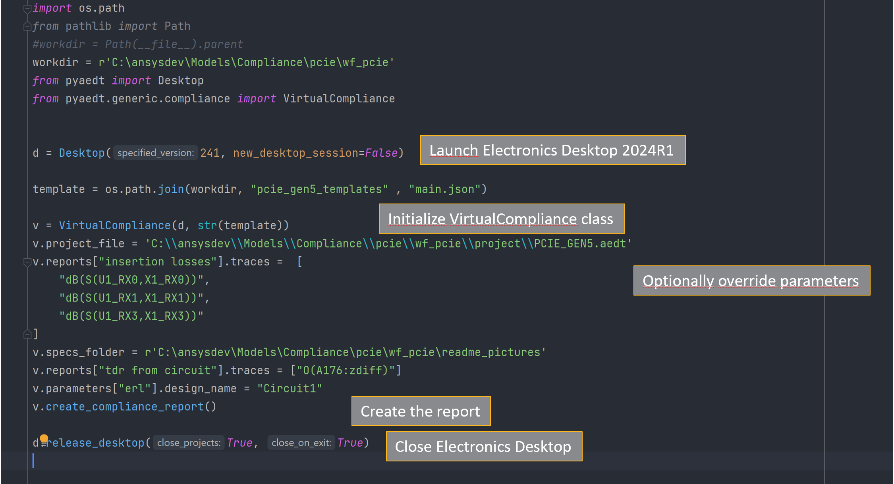
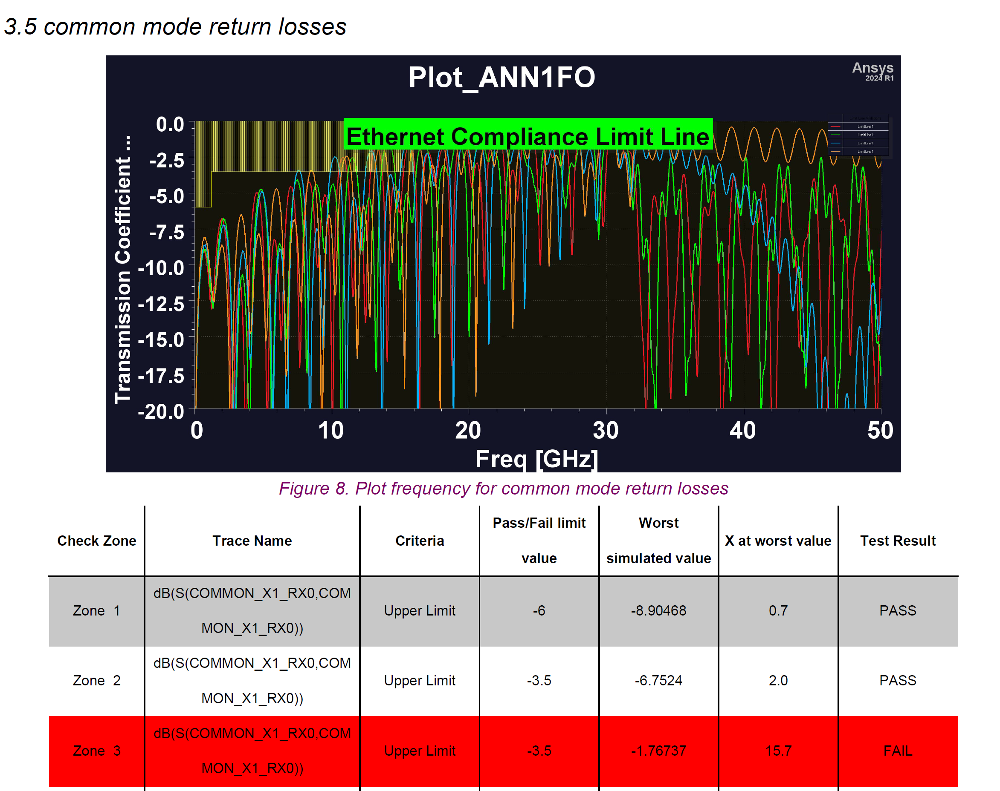
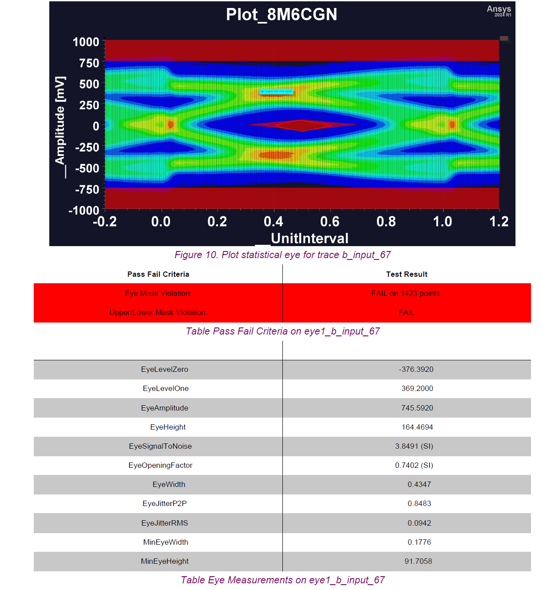
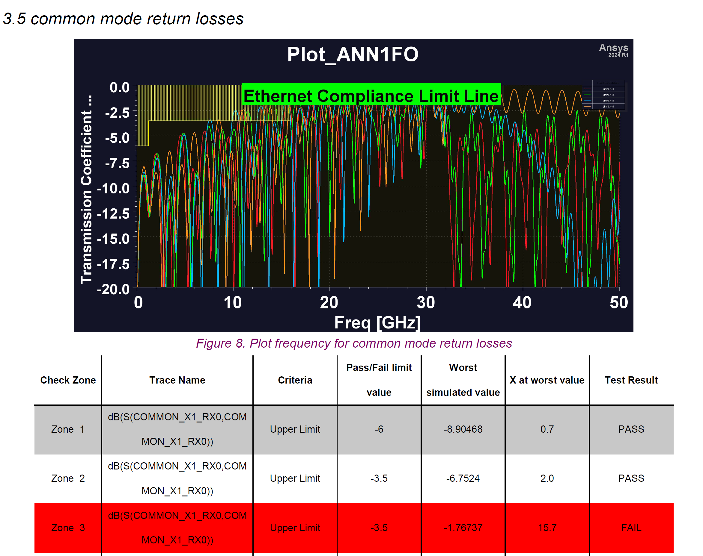
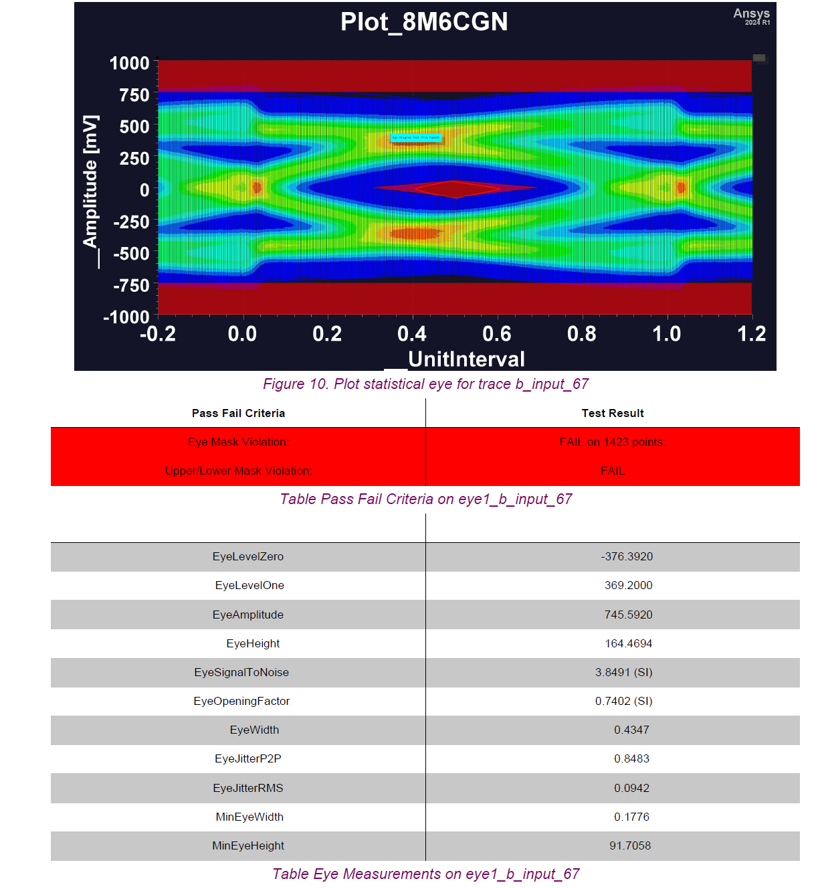

Note
Go to the end to download the full example code.
Circuit: PCIE virtual compliance#
This example shows how to generate a compliance report in PyAEDT using
the VirtualCompliance class.
Perform required imports#
Perform required imports and set paths.
import os.path
import ansys.aedt.core
from ansys.aedt.core.generic.compliance import VirtualCompliance
Set AEDT version#
Set AEDT version.
aedt_version = "2024.2"
Set non-graphical mode#
Set non-graphical mode.
You can set non_graphical either to True or False.
The Boolean parameter new_thread defines whether to create a new instance
of AEDT or try to connect to an existing instance of it.
non_graphical = True
new_thread = True
Download example files#
Download the project and files needed to run the example.
workdir = ansys.aedt.core.downloads.download_file('pcie_compliance')
projectdir = os.path.join(workdir, "project")
Launch AEDT#
Launch AEDT.
d = ansys.aedt.core.Desktop(aedt_version, new_desktop=new_thread, non_graphical=non_graphical)
C:\actions-runner\_work\_tool\Python\3.10.9\x64\lib\subprocess.py:1072: ResourceWarning: subprocess 8724 is still running
_warn("subprocess %s is still running" % self.pid,
Open and solve layout#
Open the HFSS 3D Layout project and analyze it using the SIwave solver. Before solving, this code ensures that the model is solved from DC to 70GHz and that causality and passivity are enforced.
h3d = ansys.aedt.core.Hfss3dLayout(os.path.join(projectdir, "PCIE_GEN5_only_layout.aedtz"), version=242)
h3d.remove_all_unused_definitions()
h3d.edit_cosim_options(simulate_missing_solution=False)
h3d.setups[0].sweeps[0].props["EnforcePassivity"] = True
h3d.setups[0].sweeps[0].props["Sweeps"]["Data"] = 'LIN 0MHz 70GHz 0.1GHz'
h3d.setups[0].sweeps[0].props["EnforceCausality"] = True
h3d.setups[0].sweeps[0].update()
h3d.analyze()
h3d = ansys.aedt.core.Hfss3dLayout(version=242)
touchstone_path = h3d.export_touchstone()
Create LNA project#
Use the LNA setup to retrieve Touchstone files and generate frequency domain reports.
cir = ansys.aedt.core.Circuit(project=h3d.project_name, design="Touchstone")
status, diff_pairs, comm_pairs = cir.create_lna_schematic_from_snp(input_file=touchstone_path, start_frequency=0,
stop_frequency=70, auto_assign_diff_pairs=True,
separation=".", pattern=["component", "pin", "net"],
analyze=True)
insertion = cir.get_all_insertion_loss_list(drivers=diff_pairs, receivers=diff_pairs, drivers_prefix_name="X1",
receivers_prefix_name="U1", math_formula="dB",
nets=["RX0", "RX1", "RX2", "RX3"])
return_diff = cir.get_all_return_loss_list(excitations=diff_pairs, excitation_name_prefix="X1", math_formula="dB",
nets=["RX0", "RX1", "RX2", "RX3"])
return_comm = cir.get_all_return_loss_list(excitations=comm_pairs, excitation_name_prefix="COMMON_X1",
math_formula="dB", nets=["RX0", "RX1", "RX2", "RX3"])
Create TDR project#
Create a TDR project to compute transient simulation and retrieve the TDR measurement on a differential pair. The original circuit schematic is duplicated and modified to achieve this target.
result, tdr_probe_name = cir.create_tdr_schematic_from_snp(input_file=touchstone_path,
tx_schematic_pins=["X1.A2.PCIe_Gen4_RX0_P"],
tx_schematic_differential_pins=["X1.A3.PCIe_Gen4_RX0_N"],
termination_pins=["U1.AP26.PCIe_Gen4_RX0_P",
"U1.AN26.PCIe_Gen4_RX0_N"],
differential=True, rise_time=35, use_convolution=True,
analyze=True, design_name="TDR")
Create AMI project#
Create an Ibis AMI project to compute an eye diagram simulation and retrieve eye mask violations.
result, eye_curve_tx, eye_curve_rx = cir.create_ami_schematic_from_snp(input_file=touchstone_path,
ibis_tx_file=os.path.join(projectdir, "models",
"pcieg5_32gt.ibs"),
tx_buffer_name="1p", rx_buffer_name="2p",
tx_schematic_pins=[
"U1.AM25.PCIe_Gen4_TX0_CAP_P"],
rx_schematic_pins=[
"X1.B2.PCIe_Gen4_TX0_P"],
tx_schematic_differential_pins=[
"U1.AL25.PCIe_Gen4_TX0_CAP_N"],
rx_schematic_differentialial_pins=[
"X1.B3.PCIe_Gen4_TX0_N"],
ibis_tx_component_name="Spec_Model",
use_ibis_buffer=False, differential=True,
bit_pattern="random_bit_count=2.5e3 random_seed=1",
unit_interval="31.25ps", use_convolution=True,
analyze=True, design_name="AMI")
cir.save_project()
True
Create virtual compliance report#
Initialize the VirtualCompliance class
and set up the main project information needed to generate the report.
{kind=link}
{kind=link}
template = os.path.join(workdir, "pcie_gen5_templates", "main.json")
v = VirtualCompliance(cir.desktop_class, str(template))
Customize project and design#
Define the path to the project file and the design names to be used in each report generation.
{kind=link}
v.project_file = cir.project_file
v.reports["insertion losses"].design_name = "LNA"
v.reports["return losses"].design_name = "LNA"
v.reports["common mode return losses"].design_name = "LNA"
v.reports["tdr from circuit"].design_name = "TDR"
v.reports["eye1"].design_name = "AMI"
v.reports["eye3"].design_name = "AMI"
v.parameters["erl"].design_name = "LNA"
v.specs_folder = os.path.join(workdir, 'readme_pictures')
Define trace names#
Change the trace name with projects and users. Reuse the compliance template and update traces accordingly.
v.reports["insertion losses"].traces = insertion
v.reports["return losses"].traces = return_diff
v.reports["common mode return losses"].traces = return_comm
v.reports["eye1"].traces = eye_curve_tx
v.reports["eye3"].traces = eye_curve_tx
v.reports["tdr from circuit"].traces = tdr_probe_name
v.parameters["erl"].trace_pins = [
["X1.A5.PCIe_Gen4_RX1_P", "X1.A6.PCIe_Gen4_RX1_N", "U1.AR25.PCIe_Gen4_RX1_P", "U1.AP25.PCIe_Gen4_RX1_N"],
[7, 8, 18, 17]]
Generate PDF report#
Generate the reports and produce a PDF report.
 



{kind=link}
{kind=link}
v.create_compliance_report()
d.release_desktop(True, True)
C:\actions-runner\_work\pyaedt\pyaedt\.venv\lib\site-packages\pandas\core\arraylike.py:399: RuntimeWarning: invalid value encountered in sqrt
result = getattr(ufunc, method)(*inputs, **kwargs)
C:\actions-runner\_work\pyaedt\pyaedt\.venv\lib\site-packages\pandas\core\arraylike.py:399: RuntimeWarning: invalid value encountered in sqrt
result = getattr(ufunc, method)(*inputs, **kwargs)
C:\actions-runner\_work\pyaedt\pyaedt\.venv\lib\site-packages\pandas\core\arraylike.py:399: RuntimeWarning: invalid value encountered in sqrt
result = getattr(ufunc, method)(*inputs, **kwargs)
C:\actions-runner\_work\pyaedt\pyaedt\.venv\lib\site-packages\pandas\core\arraylike.py:399: RuntimeWarning: invalid value encountered in sqrt
result = getattr(ufunc, method)(*inputs, **kwargs)
C:\actions-runner\_work\pyaedt\pyaedt\.venv\lib\site-packages\pandas\core\arraylike.py:399: RuntimeWarning: invalid value encountered in sqrt
result = getattr(ufunc, method)(*inputs, **kwargs)
C:\actions-runner\_work\pyaedt\pyaedt\.venv\lib\site-packages\pandas\core\arraylike.py:399: RuntimeWarning: invalid value encountered in sqrt
result = getattr(ufunc, method)(*inputs, **kwargs)
True
Total running time of the script: (7 minutes 26.244 seconds)